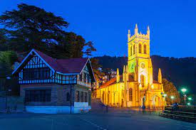
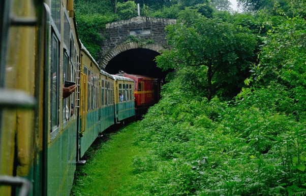
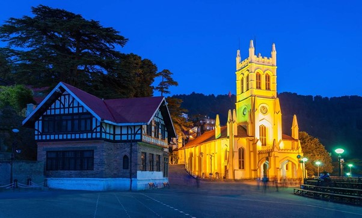
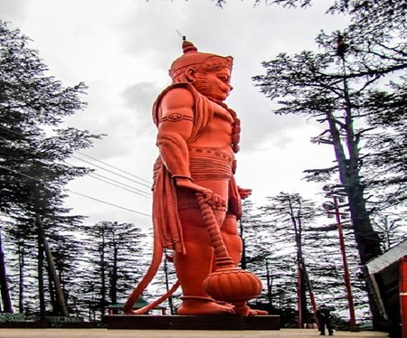

SHIMLA
The capital city of Himachal Pradesh, Shimla is a charming hill station known for its colonial architecture, scenic beauty, and pleasant climate. Established during the British Raj as a summer retreat, Shimla boasts of heritage buildings such as the Viceregal Lodge and Christ Church, reflecting its colonial past. Visitors can enjoy leisurely strolls along the Mall Road, take a ride on the historic Kalka-Shimla Railway (a UNESCO World Heritage Site), or explore nearby attractions like the Jakhu Temple and Chadwick Falls. With its panoramic vistas, lush greenery, and serene ambiance, Shimla remains a perennial favorite among travelers seeking respite from the hustle and bustle of city life.
Places near by:
1.Kalka Shimla Toy Train:
The Kalka to Shimla route is best travelled by way of the toy train that runs on a narrow-gauge track and is known for its dramatic views of the hills and surrounding villages. The historic Kalka Shimla Toy train is part of the UNESCO World Heritage List and takes individuals on a ride amongst vast green hills and deodar and pine forests.
2.Christ Church, Shimla Overview :
Known as the second oldest church in North India, the Christ Church is inspired by the neo-gothic style of architecture and is complete with a front porch, church bells and five stained glass windows that represent different virtues of Christianity. The church, which took 11 long years to complete, stands as a reminder of the British colonisation in India.
3.Jakhoo Temple, Shimla Overview :
Set amidst the lush green background of the Shivalik hill ranges, the highest point in Shimla, the Jakhu Temple is an ancient site dedicated to the Hindu god - Hanuman. Jakhu Temple has the world's largest Hanuman statue, which is visible from most parts of Shimla. Overlooking the sister town of Sanjauli, the amazing setting of Jakhoo Temple in the thick of beautiful Deodar trees is complemented with an abundant monkey population in and around the Jakhoo Hill area.